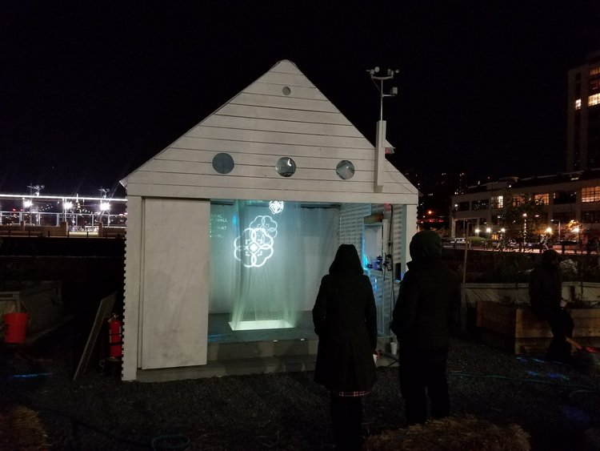

Plant Archive
About Swale
Sensor Data

The Archive of the Ecological Future installation (AEF) synthesizes three layers of local information: environmental data, botanical species catalog, and political map of involved community organizations. AEF records and visualizes geolocation, soil moisture, and wind data from our digital sensor network on Swale. Medicinal uses of Swale’s plant and sociopolitical alignments of local community organizations are also layered within the installation. Available on site and online, the installation serves as an archive of these data sets and a networking tool for participating organizations.